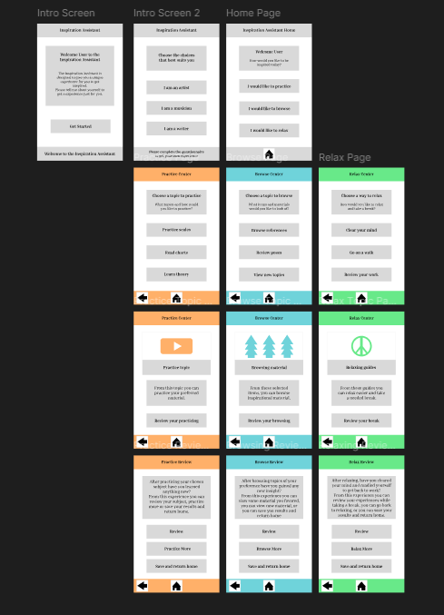

This course involved gathering research and building a display for a web tool.
I utilized my Figma skills and built a tool from the ground up.
I took this information and created a tool for users to gain inspiration from.
The inspiration Assistant Tool is an assiatance guide made to help users struggling with inspiration.
I chose to create a tool with the goal of helping users who desire help with ideas.
As a musician and artist, in some cases I often find myself lacking and inspiration.
I designed this tool as a way for like minded people who desire a assistant for inspiration.
